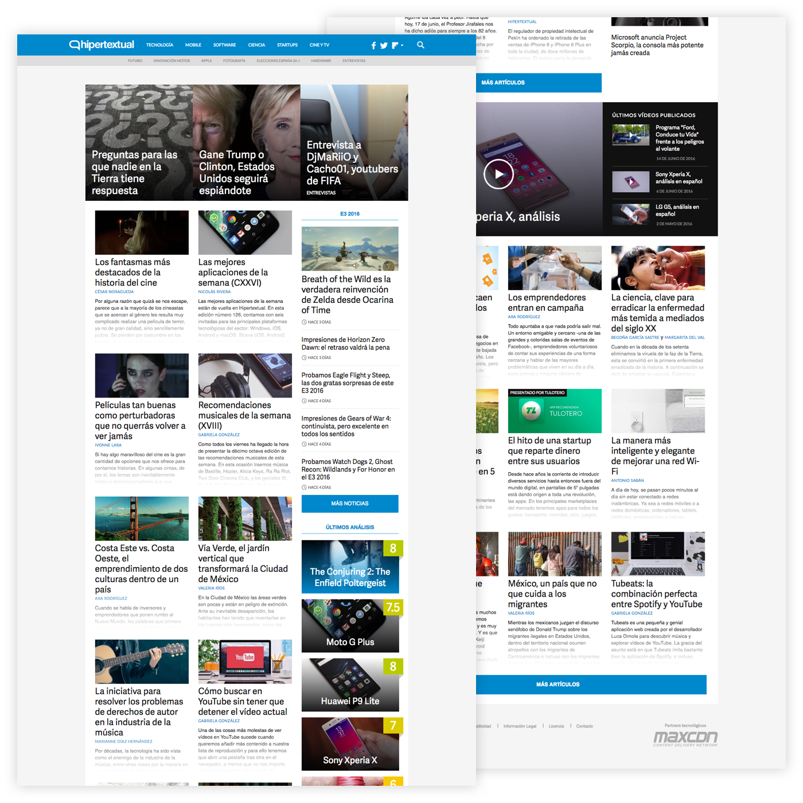
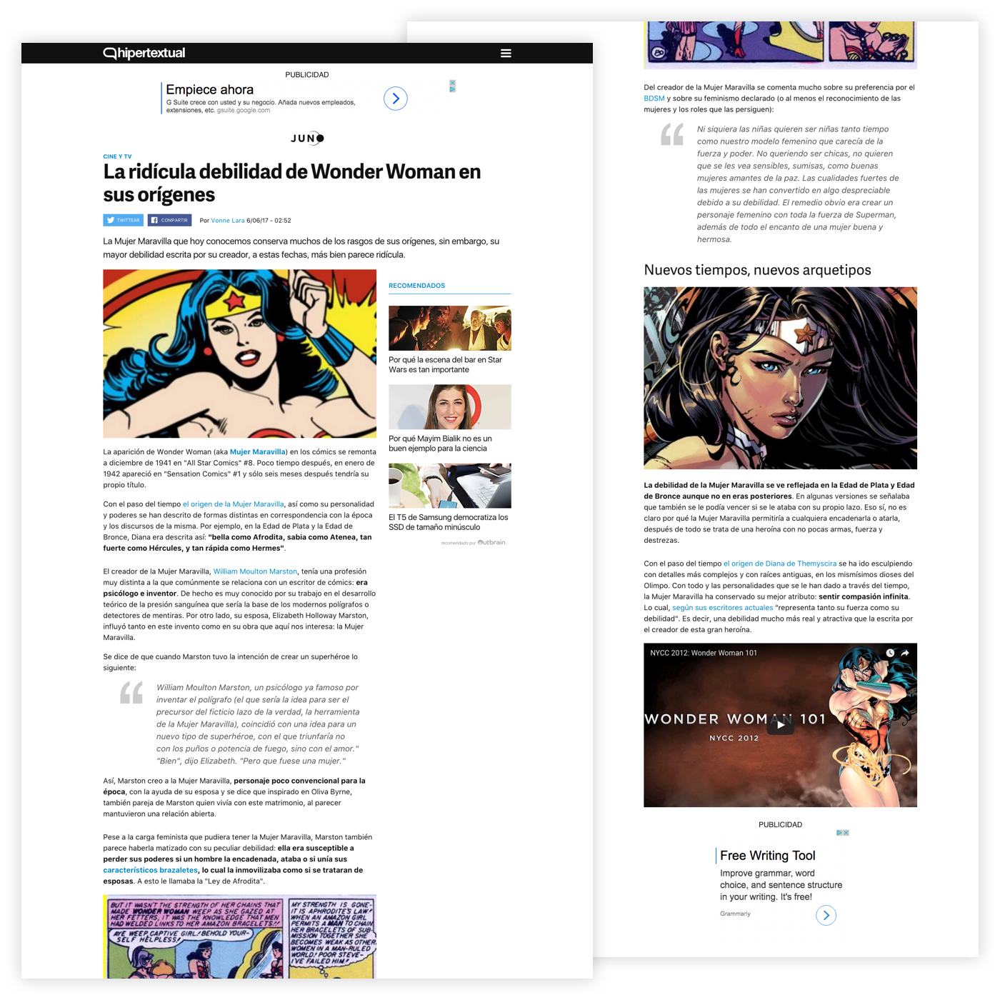
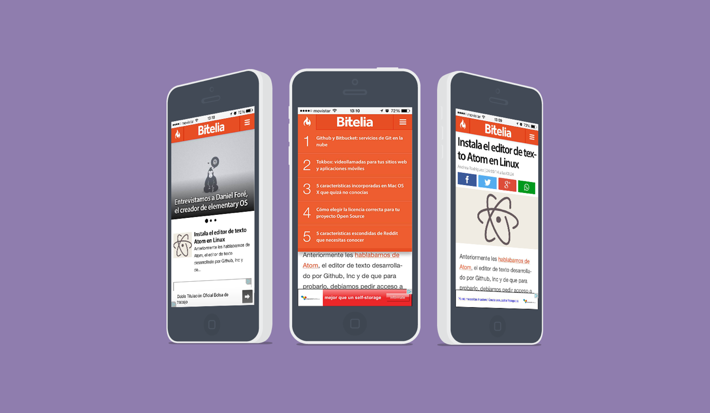

Hipertextual's web design
Half-way through 2012, I was offered to lead the project of redesigning Hipertextual’s media network, which at the time was formed by 15+ different blogs that delivered daily news for millions of people in Spain and Latin America.
The original briefing was simple: “We have a huge reach in both Spain and LATAM and the advertising industry needs to take us more seriously. We stopped being just a bunch of blogs a long time ago, we are a strong and reliable media outlet and we need to portray that.”
The clearest path at the time was ditching the classic blog layout and we spent a lot of time rethinking our homepage. Showcasing the latest news, improving its way-finding, readability, and user engagement. It needed to be a flexible design, that could work for the many topics we covered throughout the sites.
Working on this project made me aware of the many aspects at play involved in online editorial designing. You want your reader to have the most delightful experience, but you also need to increase their engagement with your page to boost page views, visitors and overall reach, all while taking very good care of your advertising space and quality.
We reached a pretty good ground base early on, but this project never stopped. We kept iterating over and over again to improve its performance and quality as much as possible. This redesign made Hipertextual stand out and shine from its competitors quite obviously and, along with the great content the editorial team created daily, we saw a drastic improvement in our audience, clients, and finances.